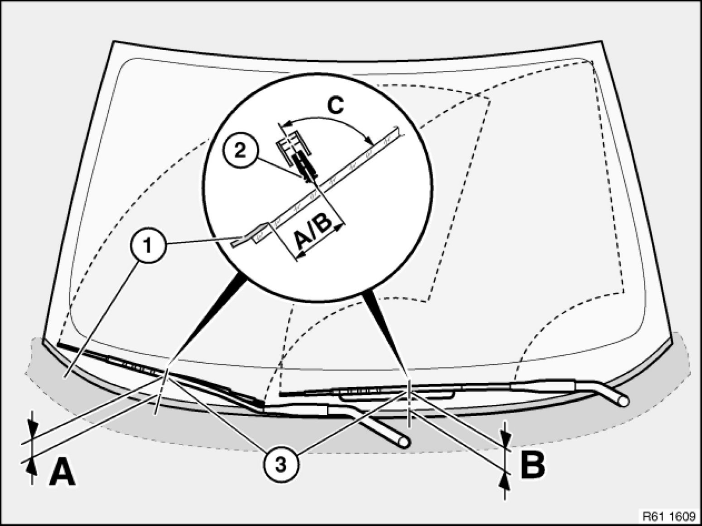
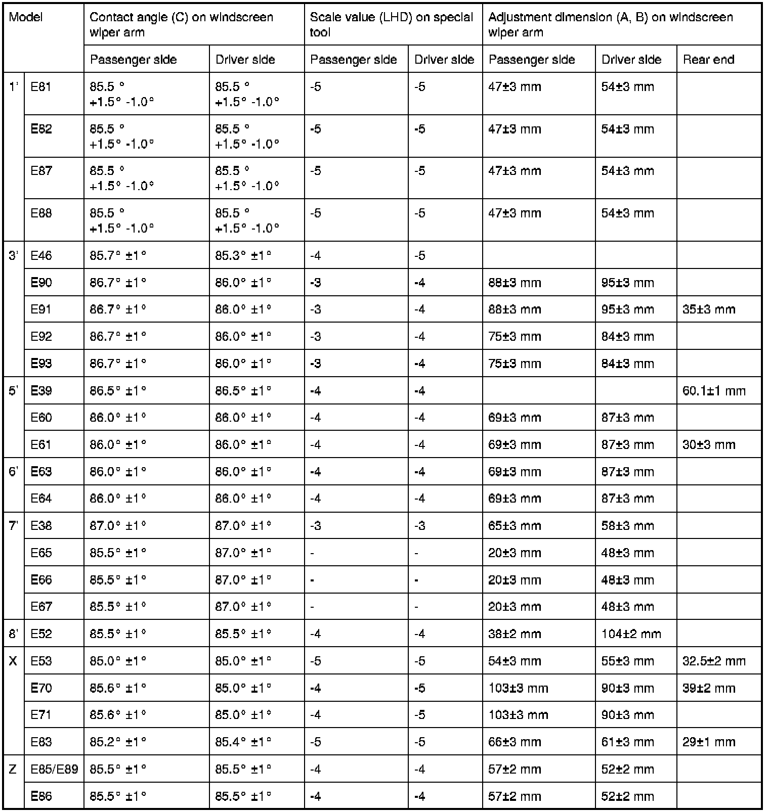

Adjusting Left or Right Windscreen Wiper
61 61 ... - Adjusting left or right windscreen wiper

Special tools required:
- 61 6 100 61 6 100 Angle Measuring Instrument
Correctly adjusting the contact angle of the wiper arms on the windscreen increases wiping quality. For adjustment, refer to the vehicle-specific repair instruction.

A/B = - Distance between windscreen wiper blade (2) and trim panel on cowl panel (1)
Note: Measurement is taken at the height of the locators (3) for the windscreen wiper arms
C= - Contact angle between wiper blade center plane and windscreen
When adjusting with special tool 61 6 100 61 6 100 Angle Measuring Instrument, set the scale value in accordance with the following table.
- LHD cars, scale range 0 to -10
